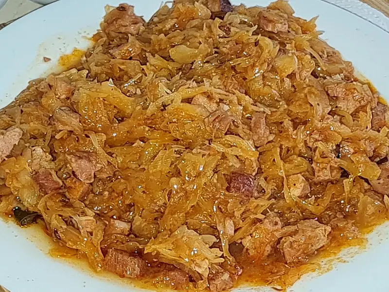

Фото: MichalPL, CC BY-SA 4.0
.jpg){kind=link}
Тушёная капуста
Белокочанная капуста, тушённая с морковью и томатной пастой
50 мин4 порц.191 ккал на порциюБ 6 · Ж 10 · У 19Русская кухня
Продукты на 4 порц.
- Капуста белокочанная1000 г
- Морковь1 шт
- Лук репчатый1 шт
- Томатная паста2 ст. л.
- Растительное масло3 ст. л.
- Вода0,75 стак.
- Лавровый лист2 шт
- Сахар1 ч. л.
- Соль1,5 ч. л.
- Перец чёрный молотый1 щеп.
Как готовить
- Капусту нашинкуйте тонкой соломкой, морковь натрите, лук нарежьте полукольцами.
- Прогрейте масло в широкой кастрюле на среднем огне, положите лук и морковь, помешивайте 3 минуты.
- Добавьте капусту, посолите и перемешайте. Через 5 минут она осядет вдвое.
- Разведите томатную пасту с водой и сахаром, влейте в капусту.
- Положите лавровый лист, накройте крышкой и тушите на слабом огне 30-35 минут, помешивая раз в 10 минут.
- Капуста готова, когда стала мягкой и полупрозрачной. Поперчите.
Совет. Если капуста пригорает, подлейте 50 мл воды. Можно добавить сосиски или фарш - получится второе блюдо.